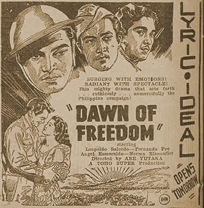

|
j
a v a s c r i p t |
March 7, 1944
A few of us went to see the Premiere (Red Cross Benefit) of "Dawn of Freedom."

"Surging with Emotions! Radiant with Spectacle!"
(And dripping with falsehoods!) The official program begins: "December 8, 1941, Nippon accepting the challenge of the Anglo-Saxons, rises in arms after having to stand by for years watching rapacious America and Britain tread upon the enslaved peoples of East Asia." So, the war is on, Japan lands here and there, and Manila declares itself an Open City. Now the shenanigans begin: A single Japanese plane flies over the city to drop leaflets and is met by a heavy barrage of anti-aircraft fire. Okay, so it's fiction. The following day, the USAFFE leaves the city with a rumble of tanks. Antonio, Lt. Garcia's youngest brother, stoops to pick up a leaflet and is knocked down by the speeding automobile of an American Officer. Unlike our Japanese hero who knocked down the dokar a few days ago, the officer didn't stop. Now in Bataan, Captain Gomez (Fernando Poe) is captured in a night raid, then questioned by Commander Hayani. Hayani awakens Gomez to his Oriental nature, long suppressed by American exploitation. Corporal Ikejima, who likes children, strikes up a friendship with the crippled Antonio. He gets a Japanese surgeon to operate on the boy's leg, and even donates blood to save him after the operation. This, of course, converts little Antonio's mother, who broadcasts a message to her son in Bataan, Lt. Garcia, as to the benevolence of the Japanese. Garcia looks confused. That's when Captain Gomez appears to shout a similar message. He continues his shouting even after being felled by a bullet. Now nine Japanese bombers attack Bataan. The Americans run to their air raid shelters, but deny access to the Filipinos: "Don't let the monkeys in. Kill the yellow monkeys!" The Americans machine-gun some 100 Filipino fighters in cold blood! In a case involving discipline, a Filipino stands up for his rights, provoking a standoff between both forces until an air raid breaks the impasse. The Americans send the Filipino on a scouting mission. As he leaves, they shoot him and his two aides in the back. After the fall of Bataan and Corregidor, little Antonio watches from his wheelchair as Ikejima marches away to his next post. Overcome by emotion, he stands up to say goodbye and manages to walk again. And that's how the film ends. Comments? A Filipino said: "It's so one-sided. Looks like the war was between Filipino and Americans." Joked another: "The Americans would have won if the Japs hadn't arrived." Despite the presence of many Japanese, one brave Filipino in the Balcony section clapped loudly when the Americans appeared a couple of times, causing a ripple of suppressed laughter to course through the theater. |
|
|
|
|